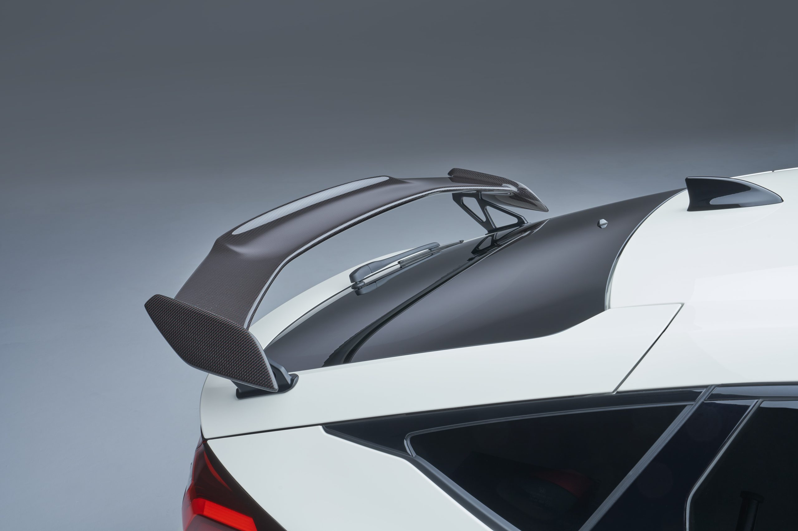
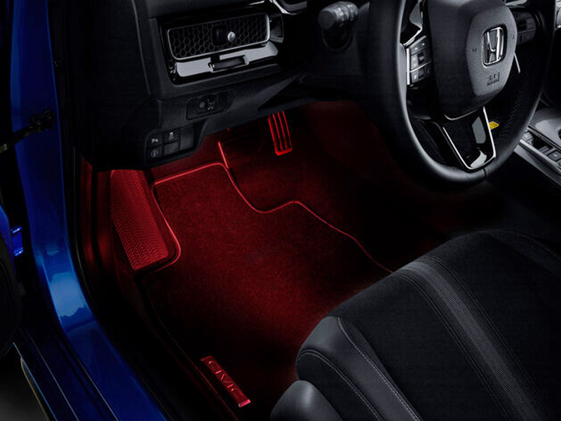
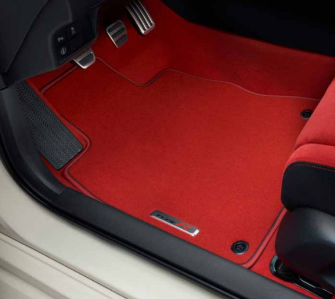
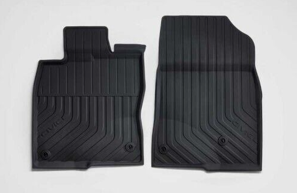
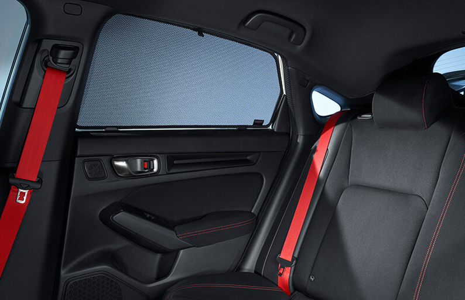

Mi az a Type-R?
A Type-R a Honda 1995-től gyártott Honda Civic-ek teljesítmény orientált változata, mely sok embert mozgat meg máig is. A legújabb Honda Civic Type-R-ről lesz szó a weboldalamon, de ezen kívül bemutatom a korábbi generációkat, szakemberek véleményét az új modellről, valamint képeket az új autóról.
Műszaki adatok
Amikor egy új autóról beszélünk szeretünk elmélyedni a műszaki adatokban. Érdekes lehet, hogy mennyi idő alatt gyorsul 100-ra, mennyi lóerő van a motorban, mekkora a forgatónyomaték. Azonban nem szabad elfelejteni, hogy ezek csak számok, és a vezetesi élményt hiba lenne számokkal leírni. Ezt észben tartva vessünk egy pillantást az adatokra!
| Motor típusa | 2,0 literes, benzinüzemű turbómotor |
| Motorkód | K20C1 |
| Szelepvezérlés | DOHC 16 VTEC |
| Erőátvitel | hatfokozatú kézi sebességváltó |
| Motorteljesítmény(LE) | 329 |
| Forgatónyomaték(Nm) | 420 |
| Gyorsulás 0 – 100 km/óra (mp) |
5.4 |
| Végsebesség (km/óra) | 275 |
| Menetkész tömeg (kg) | 1429 |
Az autó beltere
A modern dizájn és a minőségi anyagok kombinációja különlegessé teszi a beltér hangulatát. Az ülések kagylóülés mivoltukból kiváló tartást biztosítanak, mely extra kényelmet kölcsönöz sportos vezetés esetén is. Valamint a vezetőközpontú elrendezés egyszerűvé teszi az összes szükséges funkció elérését. A Honda Civic Type-R beltere egyedi és kellemes környezetet teremt mind a vezető, mind az utasok számára, melyben a hosszú utazások is rendkívül kényelmesek.

Type-R személyre szabása
Carbon csomag
A karbon csomag mindent tartalmaz, ami egy igazi ínyenc számára kedves: karbon hátsó szárny, karbon középkonzol-panel és karbon ajtó-küszöbburkolatok. A karbonról érdemes tudni, hogy nem csak az esztétékai értéke miatt kíváló, választás, hanem az utó súlyát is csökkentheti, így jobb tejesítményt kölcsönövze az autó vezetőjének.
Miért jó a karbon?
A karbonból készült autószárnyak könnyűségük révén hozzájárulnak az autók súlycsökkentéséhez, ami javítja az üzemanyag-hatékonyságot és dinamikusabb vezetési élményt nyújt. Emellett a karbon anyag ellenáll a deformációnak és szakadásnak, biztosítva ezzel az autók számára a stabilitást és tartósságot. A szilárdság-tömeg arányának köszönhetően a karbonból készült szárnyak optimalizálhatják az autó aerodinamikáját minimális súlynövekedéssel, ezáltal maximalizálva a teljesítményt és hatékonyságot.

(Karbon szárny)
Hangulatvilágítás csomag
Ez a csomag tartalmazza a külső és belső hangulatvilágítás elemeit is. A csomag tartalma: első lábtér és ülés alatti megvilágítás, ajtókárpit-megvilágítás, pohártartó- és középkonzol-megvilágítás, melyekkel hangulatos légkört teremthet autója belső terében. A Type R kilépőfénnyel együtt ezek a tételek jobb látást biztosítanak autóján belül és kívül is.
Milyen előnyökkel jár a hangulatvilágítás?
A hangulatvilágítás az autóban nemcsak esztétikai élményt nyújt, hanem javítja az utasok közérzetét és növeli az utazás kellemességét. A kiválasztható színek és dinamikus effektek lehetővé teszik az egyéni preferenciák kifejezését, emellett segíthet a vezető koncentrációjának fenntartásában. A hangulatvilágítás így nemcsak esztétikai, hanem funkcionális értékkel is bír az autó belsejében.

(Piros első lábtér és ülés alatti tér világítás)
Elegance szőnyegek
Ezek az elegáns és kényelmes, méretre szabott, puha szőnyegek piros nubuk szegéllyel és fém Type R emblémával rendelkeznek és rendkívül tartósak. A készlet tartalmazza az első és hátsó szőnyegeket is.
Miért jók a prémium szőnyegek?
A jobb minőségű szőnyegek használata az autóban számos előnnyel jár. Ezek a szőnyegek tartósabbak és kopásállóbbak, ami hosszabb élettartamot eredményez. Emellett kényelmesek és puha tapintásúak, javítva az utazás élményét. Valamint könnyebben tisztíthatók, mint az átlagos szőnyegek, és a hangszigetelési tulajdonságaik csökkenthetik a külső zajokat. A prémium szőnyegek nemcsak funkcionális előnyöket nyújtanak, hanem esztétikailag is vonzóbbá tehetik az autó belső terét.

(Elegance szőnyegek)
Első és hátsó négyévszakos szőnyegek
Az emelt szélű, négyévszakos szőnyegek a teljes lábteret befedik és Type R logó díszíti őket. Rendkívül ellenállóak, ugyanakkor könnyen tisztíthatók. A készlet tartalmazza a két első és a két hátsó szőnyeget is.
Kiknek ajánlott négyévzsakos szőnyget vásárolni?
Ha őn általában az éghajlatváltozásoknak kitett területeken él, és rendszeresen utazik különböző környezetek között, vagy egyszerűen csak praktikus és könnyen karbantartható megoldást keres. Akkor önnek szüksége van ilyen szőnyegekre. A szőnyegek alkalmazkodóképessége az időjárási viszonyokhoz és a könnyű tisztántarthatóságuk miatt előnyösek, ami különösen fontos a vidéki utazások esetén.

(Négyévszakos szőnyegek)
Napellenzők
Ezekkel a sötétítőkkel hűvösben és árnyékban maradhat. Óvják a naptól a hátsó utasokat, könnyen felhelyezhetők és levehetők. A készlet tartalma: két napellenző és egy tárolózsák.
Kiknek ajánlott hátsó sötétítőket vásárolni?
A hátsó sötétítők ideálisak azoknak az autótulajdonosoknak, akik szeretnék csökkenteni az autó utastereinek hőségét és napfény okozta zavaró tükröződéseit. Emellett a sötétítők segíthetnek a gyermekek biztonságának növelésében, miközben esztétikai értéket is adnak az autó külső megjelenésének.

(Napellenzők)
Hitel kalkulátor
|
Forint |
|
|
|
Milyen kiegőszítőket szeretnél vásárolni? |
|
Milyen színben szeretnéd megvásárolni? |
|
|
|
Havi törlesztőrészlet helye |